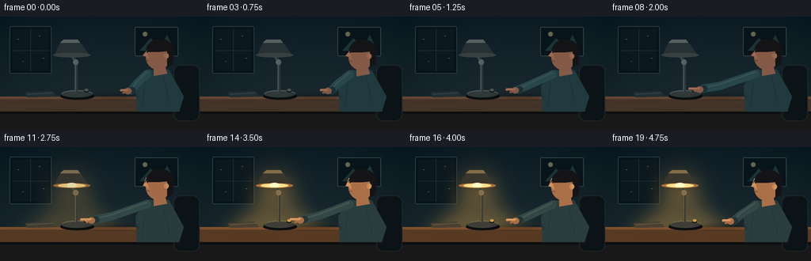
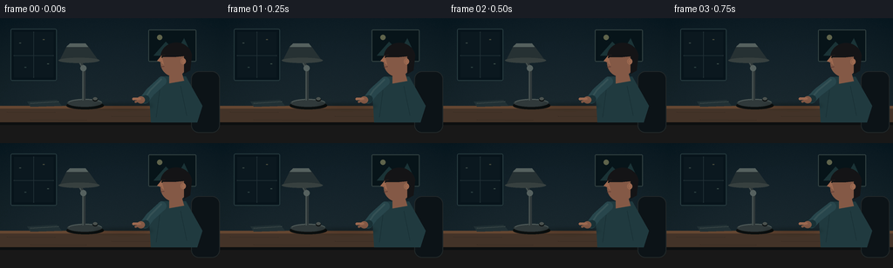

CODING AGENTS AS PIXEL WORLD MODELS
traex/GPT-5.6-Sol · motion_rationality_0039
点击播放 · 原生 RGB 像素
逐轮保存的候选
回放视频、检查图与代码变化。
每份候选均可单独播放。实际图片检查记录在下方工具轨迹中。
候选 01播放与检查图
点击播放 · 原生 RGB 像素


展开代码变化
--- 上一保存版本
+++ 本次保存版本
@@ -0,0 +1,258 @@
+from pathlib import Path
+import math
+import numpy as np
+from PIL import Image, ImageDraw, ImageFilter
+import artifact_io
+
+W, H, N = 256, 144, 20
+S = 4
+WS, HS = W*S, H*S
+ROOT = Path(__file__).resolve().parent
+rng = np.random.default_rng(39)
+
+# fixed, subtle film-like texture shared by all frames to avoid temporal noise
+noise = rng.normal(0, 1.2, (HS, WS, 1))
+yy = np.linspace(0, 1, HS)[:, None, None]
+xx = np.linspace(0, 1, WS)[None, :, None]
+
+
+def sc(v):
+ if isinstance(v, (tuple, list)):
+ return tuple(int(round(x*S)) for x in v)
+ return int(round(v*S))
+
+
+def smoothstep(x):
+ x = max(0.0, min(1.0, x))
+ return x*x*(3-2*x)
+
+
+def mix(a, b, t):
+ return tuple(int(round(a[i] + (b[i]-a[i])*t)) for i in range(len(a)))
+
+
+def ellipse(draw, box, fill, outline=None, width=1):
+ draw.ellipse(sc(box), fill=fill, outline=outline, width=sc(width) if outline else 1)
+
+
+def polygon(draw, pts, fill):
+ draw.polygon([sc(p) for p in pts], fill=fill)
+
+
+def line(draw, pts, fill, width):
+ q = [sc(p) for p in pts]
+ draw.line(q, fill=fill, width=sc(width), joint='curve')
+ r = width/2
+ for p in (pts[0], pts[-1]):
+ ellipse(draw, (p[0]-r, p[1]-r, p[0]+r, p[1]+r), fill)
+
+
+def add_glow(im, strength):
+ if strength <= 0:
+ return im
+ # broad cone from shade, clipped visually by soft masks
+ mask = Image.new('L', (WS, HS), 0)
+ md = ImageDraw.Draw(mask)
+ md.polygon([sc((78, 47)), sc((104, 47)), sc((143, 106)), sc((43, 106))], fill=int(130*strength))
+ mask = mask.filter(ImageFilter.GaussianBlur(sc(10)))
+ warm = Image.new('RGB', (WS, HS), (255, 193, 91))
+ im = Image.composite(Image.blend(im, warm, 0.37*strength), im, mask)
+
+ # halo around bulb/shade
+ hm = Image.new('L', (WS, HS), 0)
+ hd = ImageDraw.Draw(hm)
+ hd.ellipse(sc((65, 27, 116, 75)), fill=int(110*strength))
+ hm = hm.filter(ImageFilter.GaussianBlur(sc(13)))
+ halo = Image.new('RGB', (WS, HS), (255, 177, 59))
+ im = Image.composite(Image.blend(im, halo, 0.45*strength), im, hm)
+
+ # bright pool on desktop
+ pm = Image.new('L', (WS, HS), 0)
+ pd = ImageDraw.Draw(pm)
+ pd.ellipse(sc((30, 88, 154, 120)), fill=int(175*strength))
+ pm = pm.filter(ImageFilter.GaussianBlur(sc(11)))
+ pool = Image.new('RGB', (WS, HS), (255, 181, 76))
+ im = Image.composite(Image.blend(im, pool, 0.36*strength), im, pm)
+ return im
+
+
+def arm_pose(i):
+ # shoulder stays attached; wrist follows a deliberate reach, press, hold, return.
+ shoulder = (185.5, 72.5)
+ if i <= 2:
+ t = 0
+ elif i <= 8:
+ t = smoothstep((i-2)/6)
+ elif i <= 12:
+ t = 1
+ else:
+ t = 1 - 0.84*smoothstep((i-12)/7) # visibly retracts, ending naturally near body
+ # Along this path the elbow opens before the fingertip reaches the switch.
+ elbow = (172 - 31*t, 85 + 2.5*t)
+ wrist = (158 - 46*t, 94 - 2.0*t)
+ press = 1.4 if i in (9, 10) else (0.6 if i == 11 else 0)
+ wrist = (wrist[0], wrist[1] + press)
+ return shoulder, elbow, wrist, t, press
+
+
+def draw_frame(i):
+ # Cool blue-green room with mild vignette.
+ top = np.array([19, 34, 42.], dtype=float)
+ bot = np.array([34, 48, 52.], dtype=float)
+ arr = top + (bot-top)*yy
+ arr = np.broadcast_to(arr, (HS, WS, 3)).copy()
+ vignette = ((xx-.50)**2*20 + (yy-.47)**2*11)
+ arr -= np.clip(vignette, 0, 14)
+ arr += noise
+ arr = np.uint8(np.clip(arr, 0, 255))
+ im = Image.fromarray(arr, 'RGB')
+ d = ImageDraw.Draw(im)
+
+ # Lamp is dark before the switch is contacted; glow quickly blooms after the press.
+ if i < 10:
+ light = 0.0
+ elif i == 10:
+ light = 0.28
+ elif i == 11:
+ light = 0.78
+ else:
+ light = 1.0
+
+ # Background architecture and quiet domestic details.
+ # left wall panel/window
+ d.rounded_rectangle(sc((12, 12, 65, 72)), radius=sc(2), fill=(12, 24, 31), outline=(43, 62, 66), width=sc(1))
+ d.rectangle(sc((16, 16, 61, 68)), fill=(15, 28, 35))
+ line(d, [(38.5,16), (38.5,68)], (37, 52, 57), .8)
+ line(d, [(16,43), (61,43)], (37, 52, 57), .8)
+ # dim reflected city lights
+ for x,y,c in [(22,28,(58,72,70)),(49,24,(72,75,61)),(28,56,(47,67,67)),(54,52,(58,76,72))]:
+ d.rectangle(sc((x,y,x+2,y+1)), fill=c)
+ # small framed print
+ d.rounded_rectangle(sc((170, 13, 225, 50)), radius=sc(1.5), fill=(12, 24, 29), outline=(54, 69, 69), width=sc(1))
+ polygon(d, [(176,43),(190,27),(202,39),(211,23),(220,43)], (30,54,57))
+ ellipse(d, (180,19,186,25), (97,101,77))
+ # wall shadow line
+ d.rectangle(sc((0, 101, 256, 104)), fill=(10, 18, 21))
+
+ im = add_glow(im, light)
+ d = ImageDraw.Draw(im)
+
+ # Table and front face.
+ desk = mix((70, 54, 43), (101, 65, 37), light*.65)
+ desk_edge = mix((101, 72, 52), (151, 91, 45), light*.55)
+ d.rectangle(sc((0, 101, 256, 120)), fill=desk)
+ d.rectangle(sc((0, 101, 256, 104)), fill=desk_edge)
+ d.rectangle(sc((0, 120, 256, 144)), fill=(28, 28, 28))
+ d.rectangle(sc((0, 120, 256, 123)), fill=(16, 19, 20))
+ # wood grain
+ for yv, x1, x2 in [(108,8,63),(113,128,218),(117,35,99)]:
+ line(d, [(x1,yv),(x2,yv+.4)], mix((52,43,37),(107,66,34),light*.5), .45)
+ # book/notebook under light
+ polygon(d, [(31,96),(65,94),(71,101),(35,102)], mix((37,51,55),(91,74,50),light*.7))
+ line(d, [(35,98),(67,96)], mix((98,109,103),(219,167,90),light*.7), .6)
+ # mug on far right, mostly behind arm
+ mugc = mix((45,58,61),(103,75,47),light*.55)
+ d.rounded_rectangle(sc((219,83,237,102)), radius=sc(2.5), fill=mugc, outline=mix((70,83,83),(159,106,57),light*.6), width=sc(.8))
+ d.arc(sc((231,87,243,98)), -85, 90, fill=mix((67,80,80),(157,104,58),light*.6), width=sc(2))
+
+ # Person: chair/body/head in right third. Slight breathing/head movement.
+ breathe = math.sin(i*0.42)*0.45
+ # chair back
+ d.rounded_rectangle(sc((219,61,252,132)), radius=sc(9), fill=(16,23,27), outline=(36,43,44), width=sc(1))
+ # torso sweater
+ polygon(d, [(184,67+breathe),(213,67+breathe),(232,101),(226,120),(173,120),(171,88)], mix((36,61,66),(58,68,60),light*.4))
+ # sweater ribbing
+ line(d, [(207,78),(214,112)], mix((29,51,56),(53,61,52),light*.35), .7)
+ line(d, [(183,83),(179,114)], mix((29,51,56),(53,61,52),light*.35), .7)
+ # neck
+ skin = mix((132,91,72),(194,125,75),light*.62)
+ skin_hi = mix((156,106,82),(234,166,98),light*.68)
+ polygon(d, [(194,60+breathe),(207,58+breathe),(211,72+breathe),(194,75+breathe)], skin)
+ # hair mass and head/profile facing left
+ ellipse(d, (187,30+breathe,219,64+breathe), (27,27,29))
+ ellipse(d, (184,35+breathe,215,67+breathe), skin)
+ # hair cap and back
+ d.pieslice(sc((184,28+breathe,220,61+breathe)), 180, 354, fill=(24,24,26))
+ polygon(d, [(211,38+breathe),(220,42+breathe),(218,60+breathe),(211,64+breathe)], (24,24,26))
+ # profile nose pointing toward lamp
+ polygon(d, [(185,43+breathe),(180,49+breathe),(185,51+breathe),(188,54+breathe)], skin_hi)
+ # ear
+ ellipse(d, (207,46+breathe,213,53+breathe), skin_hi)
+ d.arc(sc((208,47+breathe,212,52+breathe)), 100, 270, fill=skin, width=sc(.6))
+ # eyebrow / eye gaze toward hand
+ line(d, [(184.5,42.5+breathe),(189,42+breathe)], (48,37,34), .7)
+ ellipse(d, (185,44+breathe,186.6,45.4+breathe), (20,25,25))
+ # nose/lip profile details
+ line(d, [(181.7,49.5+breathe),(185,50+breathe)], (108,66,56), .5)
+ line(d, [(184,56+breathe),(188,55.5+breathe)], (83,48,47), .65)
+
+ # Lamp hardware. Stem and shade stand forward of background but behind reaching hand.
+ metal = mix((51,60,61),(80,69,52),light*.45)
+ metal_hi = mix((88,99,97),(165,119,61),light*.6)
+ # base shadow
+ ellipse(d, (76,96,119,105), (15,19,19))
+ ellipse(d, (77,93,117,102), metal)
+ d.arc(sc((78,93,117,102)), 190, 350, fill=metal_hi, width=sc(1))
+ # articulated stem
+ line(d, [(96,95),(96,58),(90,47)], metal, 4)
+ line(d, [(95,94),(95,58),(89,47)], metal_hi, .8)
+ ellipse(d, (92,54,99,61), metal_hi)
+ # shade bell, opening downwards
+ polygon(d, [(77,31),(100,31),(113,49),(68,49)], mix((42,52,54),(82,64,43),light*.45))
+ polygon(d, [(80,29),(98,29),(101,33),(76,33)], metal_hi)
+ ellipse(d, (67,45.5,114,51.5), mix((58,67,66),(197,126,53),light*.82))
+ if light > 0:
+ ellipse(d, (73,46,108,51), mix((104,82,53),(255,221,139),light))
+ ellipse(d, (84,45,97,51), mix((116,95,66),(255,245,191),light))
+ # little push-button clearly visible on base
+ pressed = i in (9,10)
+ by = 91.8 + (1.5 if pressed else 0)
+ ellipse(d, (106,by,112,by+4), (14,18,19))
+ ellipse(d, (106.5,by-.7,111.5,by+2.6), mix((77,84,81),(233,166,73),light*.82))
+
+ # Reaching arm, anatomically connected shoulder -> bent elbow -> hand/finger.
+ shoulder, elbow, wrist, reach, press = arm_pose(i)
+ shoulder = (shoulder[0], shoulder[1]+breathe)
+ # sleeve upper arm and forearm ending at cuff
+ sleeve = mix((43,72,78),(66,77,67),light*.45)
+ sleeve_hi = mix((57,84,88),(92,94,70),light*.45)
+ line(d, [shoulder, elbow, (wrist[0]+8,wrist[1]-1)], sleeve, 10.5)
+ line(d, [(shoulder[0]-1,shoulder[1]-2), (elbow[0],elbow[1]-2), (wrist[0]+8,wrist[1]-2)], sleeve_hi, 2.0)
+ # cuff
+ line(d, [(wrist[0]+9,wrist[1]-1),(wrist[0]+4,wrist[1])], mix((29,52,57),(52,59,51),light*.45), 8.5)
+ # hand/palm
+ ellipse(d, (wrist[0]-1,wrist[1]-4.1,wrist[0]+8,wrist[1]+4.2), skin)
+ # extended index finger points left toward button; when reaching its tip is at x108
+ finger_len = 5 + 4.5*reach
+ tipx = wrist[0]-finger_len
+ tipy = wrist[1]-1.0
+ line(d, [(wrist[0]+2,wrist[1]-1),(tipx,tipy)], skin_hi, 3.0)
+ # curled lower fingers
+ line(d, [(wrist[0]+3,wrist[1]+1),(wrist[0]-2.5,wrist[1]+2.2)], skin, 2.6)
+ ellipse(d, (tipx-1.5,tipy-1.45,tipx+1.5,tipy+1.45), skin_hi)
+ # tiny contact shadow emphasizes the button press
+ if i in (9,10):
+ ellipse(d, (106.5,94.2,111,95.2), (35,29,23))
+
+ # warm facial and hand edge highlights after activation
+ if light > .2:
+ line(d, [(181.8,47+breathe),(184.6,39.5+breathe)], (238,164,91), .75*light)
+ line(d, [(tipx,tipy-1.1),(wrist[0]+4,wrist[1]-2.1)], (249,175,92), .6*light)
+
+ # foreground table shadow beneath forearm
+ sh = Image.new('RGBA', (WS,HS), (0,0,0,0))
+ sd = ImageDraw.Draw(sh)
+ sd.ellipse(sc((min(wrist[0]-8,108),98,max(176,wrist[0]+10),104)), fill=(0,0,0,55))
+ sh = sh.filter(ImageFilter.GaussianBlur(sc(2)))
+ im = Image.alpha_composite(im.convert('RGBA'), sh).convert('RGB')
+
+ # downsampled antialiasing and very slight cinematic contrast
+ im = im.resize((W,H), Image.Resampling.LANCZOS)
+ a = np.asarray(im).astype(np.float32)
+ a = (a-128)*1.035 + 128
+ return np.uint8(np.clip(a,0,255))
+
+
+frames = np.stack([draw_frame(i) for i in range(N)], axis=0)
+artifact_io.save(frames, ROOT)
+print(f"saved {frames.shape} {frames.dtype}; mean luminance before/after: {frames[:10].mean():.1f}/{frames[12:].mean():.1f}")
可观测工具轨迹
实际执行的命令与返回图片。
命令 1exit 0
/bin/bash -lc "cat prompt.txt && printf '\\n--- GENERATION_RULES ---\\n' && cat GENERATION_RULES.md && printf '\\n--- TASK_SPEC ---\\n' && cat task_spec.json"
命令 2exit 0
/bin/bash -lc "find . -maxdepth 3 -type f -printf '%p\\n' | sort | sed -n '1,240p'"
命令 3exit 0
/bin/bash -lc "sed -n '1,260p' artifact_io.py"
命令 4exit 0
/bin/bash -lc "cat > generate.py <<'PY'
from pathlib import Path
import math
import numpy as np
from PIL import Image, ImageDraw, ImageFilter
import artifact_io
W, H, N = 256, 144, 20
S = 4
WS, HS = W*S, H*S
ROOT = Path(__file__).resolve().parent
rng = np.random.default_rng(39)
# fixed, subtle film-like texture shared by all frames to avoid temporal noise
noise = rng.normal(0, 1.2, (HS, WS, 1))
yy = np.linspace(0, 1, HS)[:, None, None]
xx = np.linspace(0, 1, WS)[None, :, None]
def sc(v):
if isinstance(v, (tuple, list)):
return tuple(int(round(x*S)) for x in v)
return int(round(v*S))
def smoothstep(x):
x = max(0.0, min(1.0, x))
return x*x*(3-2*x)
def mix(a, b, t):
return tuple(int(round(a[i] + (b[i]-a[i])*t)) for i in range(len(a)))
def ellipse(draw, box, fill, outline=None, width=1):
draw.ellipse(sc(box), fill=fill, outline=outline, width=sc(width) if outline else 1)
def polygon(draw, pts, fill):
draw.polygon([sc(p) for p in pts], fill=fill)
def line(draw, pts, fill, width):
q = [sc(p) for p in pts]
draw.line(q, fill=fill, width=sc(width), joint='curve')
r = width/2
for p in (pts[0], pts[-1]):
ellipse(draw, (p[0]-r, p[1]-r, p[0]+r, p[1]+r), fill)
def add_glow(im, strength):
if strength <= 0:
return im
# broad cone from shade, clipped visually by soft masks
mask = Image.new('L', (WS, HS), 0)
md = ImageDraw.Draw(mask)
md.polygon([sc((78, 47)), sc((104, 47)), sc((143, 106)), sc((43, 106))], fill=int(130*strength))
mask = mask.filter(ImageFilter.GaussianBlur(sc(10)))
warm = Image.new('RGB', (WS, HS), (255, 193, 91))
im = Image.composite(Image.blend(im, warm, 0.37*strength), im, mask)
# halo around bulb/shade
hm = Image.new('L', (WS, HS), 0)
hd = ImageDraw.Draw(hm)
hd.ellipse(sc((65, 27, 116, 75)), fill=int(110*strength))
hm = hm.filter(ImageFilter.GaussianBlur(sc(13)))
halo = Image.new('RGB', (WS, HS), (255, 177, 59))
im = Image.composite(Image.blend(im, halo, 0.45*strength), im, hm)
# bright pool on desktop
pm = Image.new('L', (WS, HS), 0)
pd = ImageDraw.Draw(pm)
pd.ellipse(sc((30, 88, 154, 120)), fill=int(175*strength))
pm = pm.filter(ImageFilter.GaussianBlur(sc(11)))
pool = Image.new('RGB', (WS, HS), (255, 181, 76))
im = Image.composite(Image.blend(im, pool, 0.36*strength), im, pm)
return im
def arm_pose(i):
# shoulder stays attached; wrist follows a deliberate reach, press, hold, return.
shoulder = (185.5, 72.5)
if i <= 2:
t = 0
elif i <= 8:
t = smoothstep((i-2)/6)
elif i <= 12:
t = 1
else:
t = 1 - 0.84*smoothstep((i-12)/7) # visibly retracts, ending naturally near body
# Along this path the elbow opens before the fingertip reaches the switch.
elbow = (172 - 31*t, 85 + 2.5*t)
wrist = (158 - 46*t, 94 - 2.0*t)
press = 1.4 if i in (9, 10) else (0.6 if i == 11 else 0)
wrist = (wrist[0], wrist[1] + press)
return shoulder, elbow, wrist, t, press
def draw_frame(i):
# Cool blue-green room with mild vignette.
top = np.array([19, 34, 42.], dtype=float)
bot = np.array([34, 48, 52.], dtype=float)
arr = top + (bot-top)*yy
arr = np.broadcast_to(arr, (HS, WS, 3)).copy()
vignette = ((xx-.50)**2*20 + (yy-.47)**2*11)
arr -= np.clip(vignette, 0, 14)
arr += noise
arr = np.uint8(np.clip(arr, 0, 255))
im = Image.fromarray(arr, 'RGB')
d = ImageDraw.Draw(im)
# Lamp is dark before the switch is contacted; glow quickly blooms after the press.
if i < 10:
light = 0.0
elif i == 10:
light = 0.28
elif i == 11:
light = 0.78
else:
light = 1.0
# Background architecture and quiet domestic details.
# left wall panel/window
d.rounded_rectangle(sc((12, 12, 65, 72)), radius=sc(2), fill=(12, 24, 31), outline=(43, 62, 66), width=sc(1))
d.rectangle(sc((16, 16, 61, 68)), fill=(15, 28, 35))
line(d, [(38.5,16), (38.5,68)], (37, 52, 57), .8)
line(d, [(16,43), (61,43)], (37, 52, 57), .8)
# dim reflected city lights
for x,y,c in [(22,28,(58,72,70)),(49,24,(72,75,61)),(28,56,(47,67,67)),(54,52,(58,76,72))]:
d.rectangle(sc((x,y,x+2,y+1)), fill=c)
# small framed print
d.rounded_rectangle(sc((170, 13, 225, 50)), radius=sc(1.5), fill=(12, 24, 29), outline=(54, 69, 69), width=sc(1))
polygon(d, [(176,43),(190,27),(202,39),(211,23),(220,43)], (30,54,57))
ellipse(d, (180,19,186,25), (97,101,77))
# wall shadow line
d.rectangle(sc((0, 101, 256, 104)), fill=(10, 18, 21))
im = add_glow(im, light)
d = ImageDraw.Draw(im)
# Table and front face.
desk = mix((70, 54, 43), (101, 65, 37), light*.65)
desk_edge = mix((101, 72, 52), (151, 91, 45), light*.55)
d.rectangle(sc((0, 101, 256, 120)), fill=desk)
d.rectangle(sc((0, 101, 256, 104)), fill=desk_edge)
d.rectangle(sc((0, 120, 256, 144)), fill=(28, 28, 28))
d.rectangle(sc((0, 120, 256, 123)), fill=(16, 19, 20))
# wood grain
for yv, x1, x2 in [(108,8,63),(113,128,218),(117,35,99)]:
line(d, [(x1,yv),(x2,yv+.4)], mix((52,43,37),(107,66,34),light*.5), .45)
# book/notebook under light
polygon(d, [(31,96),(65,94),(71,101),(35,102)], mix((37,51,55),(91,74,50),light*.7))
line(d, [(35,98),(67,96)], mix((98,109,103),(219,167,90),light*.7), .6)
# mug on far right, mostly behind arm
mugc = mix((45,58,61),(103,75,47),light*.55)
d.rounded_rectangle(sc((219,83,237,102)), radius=sc(2.5), fill=mugc, outline=mix((70,83,83),(159,106,57),light*.6), width=sc(.8))
d.arc(sc((231,87,243,98)), -85, 90, fill=mix((67,80,80),(157,104,58),light*.6), width=sc(2))
# Person: chair/body/head in right third. Slight breathing/head movement.
breathe = math.sin(i*0.42)*0.45
# chair back
d.rounded_rectangle(sc((219,61,252,132)), radius=sc(9), fill=(16,23,27), outline=(36,43,44), width=sc(1))
# torso sweater
polygon(d, [(184,67+breathe),(213,67+breathe),(232,101),(226,120),(173,120),(171,88)], mix((36,61,66),(58,68,60),light*.4))
# sweater ribbing
line(d, [(207,78),(214,112)], mix((29,51,56),(53,61,52),light*.35), .7)
line(d, [(183,83),(179,114)], mix((29,51,56),(53,61,52),light*.35), .7)
# neck
skin = mix((132,91,72),(194,125,75),light*.62)
skin_hi = mix((156,106,82),(234,166,98),light*.68)
polygon(d, [(194,60+breathe),(207,58+breathe),(211,72+breathe),(194,75+breathe)], skin)
# hair mass and head/profile facing left
ellipse(d, (187,30+breathe,219,64+breathe), (27,27,29))
ellipse(d, (184,35+breathe,215,67+breathe), skin)
# hair cap and back
d.pieslice(sc((184,28+breathe,220,61+breathe)), 180, 354, fill=(24,24,26))
polygon(d, [(211,38+breathe),(220,42+breathe),(218,60+breathe),(211,64+breathe)], (24,24,26))
# profile nose pointing toward lamp
polygon(d, [(185,43+breathe),(180,49+breathe),(185,51+breathe),(188,54+breathe)], skin_hi)
# ear
ellipse(d, (207,46+breathe,213,53+breathe), skin_hi)
d.arc(sc((208,47+breathe,212,52+breathe)), 100, 270, fill=skin, width=sc(.6))
# eyebrow / eye gaze toward hand
line(d, [(184.5,42.5+breathe),(189,42+breathe)], (48,37,34), .7)
ellipse(d, (185,44+breathe,186.6,45.4+breathe), (20,25,25))
# nose/lip profile details
line(d, [(181.7,49.5+breathe),(185,50+breathe)], (108,66,56), .5)
line(d, [(184,56+breathe),(188,55.5+breathe)], (83,48,47), .65)
# Lamp hardware. Stem and shade stand forward of background but behind reaching hand.
metal = mix((51,60,61),(80,69,52),light*.45)
metal_hi = mix((88,99,97),(165,119,61),light*.6)
# base shadow
ellipse(d, (76,96,119,105), (15,19,19))
ellipse(d, (77,93,117,102), metal)
d.arc(sc((78,93,117,102)), 190, 350, fill=metal_hi, width=sc(1))
# articulated stem
line(d, [(96,95),(96,58),(90,47)], metal, 4)
line(d, [(95,94),(95,58),(89,47)], metal_hi, .8)
ellipse(d, (92,54,99,61), metal_hi)
# shade bell, opening downwards
polygon(d, [(77,31),(100,31),(113,49),(68,49)], mix((42,52,54),(82,64,43),light*.45))
polygon(d, [(80,29),(98,29),(101,33),(76,33)], metal_hi)
ellipse(d, (67,45.5,114,51.5), mix((58,67,66),(197,126,53),light*.82))
if light > 0:
ellipse(d, (73,46,108,51), mix((104,82,53),(255,221,139),light))
ellipse(d, (84,45,97,51), mix((116,95,66),(255,245,191),light))
# little push-button clearly visible on base
pressed = i in (9,10)
by = 91.8 + (1.5 if pressed else 0)
ellipse(d, (106,by,112,by+4), (14,18,19))
ellipse(d, (106.5,by-.7,111.5,by+2.6), mix((77,84,81),(233,166,73),light*.82))
# Reaching arm, anatomically connected shoulder -> bent elbow -> hand/finger.
shoulder, elbow, wrist, reach, press = arm_pose(i)
shoulder = (shoulder[0], shoulder[1]+breathe)
# sleeve upper arm and forearm ending at cuff
sleeve = mix((43,72,78),(66,77,67),light*.45)
sleeve_hi = mix((57,84,88),(92,94,70),light*.45)
line(d, [shoulder, elbow, (wrist[0]+8,wrist[1]-1)], sleeve, 10.5)
line(d, [(shoulder[0]-1,shoulder[1]-2), (elbow[0],elbow[1]-2), (wrist[0]+8,wrist[1]-2)], sleeve_hi, 2.0)
# cuff
line(d, [(wrist[0]+9,wrist[1]-1),(wrist[0]+4,wrist[1])], mix((29,52,57),(52,59,51),light*.45), 8.5)
# hand/palm
ellipse(d, (wrist[0]-1,wrist[1]-4.1,wrist[0]+8,wrist[1]+4.2), skin)
# extended index finger points left toward button; when reaching its tip is at x108
finger_len = 5 + 4.5*reach
tipx = wrist[0]-finger_len
tipy = wrist[1]-1.0
line(d, [(wrist[0]+2,wrist[1]-1),(tipx,tipy)], skin_hi, 3.0)
# curled lower fingers
line(d, [(wrist[0]+3,wrist[1]+1),(wrist[0]-2.5,wrist[1]+2.2)], skin, 2.6)
ellipse(d, (tipx-1.5,tipy-1.45,tipx+1.5,tipy+1.45), skin_hi)
# tiny contact shadow emphasizes the button press
if i in (9,10):
ellipse(d, (106.5,94.2,111,95.2), (35,29,23))
# warm facial and hand edge highlights after activation
if light > .2:
line(d, [(181.8,47+breathe),(184.6,39.5+breathe)], (238,164,91), .75*light)
line(d, [(tipx,tipy-1.1),(wrist[0]+4,wrist[1]-2.1)], (249,175,92), .6*light)
# foreground table shadow beneath forearm
sh = Image.new('RGBA', (WS,HS), (0,0,0,0))
sd = ImageDraw.Draw(sh)
sd.ellipse(sc((min(wrist[0]-8,108),98,max(176,wrist[0]+10),104)), fill=(0,0,0,55))
sh = sh.filter(ImageFilter.GaussianBlur(sc(2)))
im = Image.alpha_composite(im.convert('RGBA'), sh).convert('RGB')
# downsampled antialiasing and very slight cinematic contrast
im = im.resize((W,H), Image.Resampling.LANCZOS)
a = np.asarray(im).astype(np.float32)
a = (a-128)*1.035 + 128
return np.uint8(np.clip(a,0,255))
frames = np.stack([draw_frame(i) for i in range(N)], axis=0)
artifact_io.save(frames, ROOT)
print(f\"saved {frames.shape} {frames.dtype}; mean luminance before/after: {frames[:10].mean():.1f}/{frames[12:].mean():.1f}\")
PY
python generate.py
ls -lh pixels.npz inspection.png transition_check.png index.html frames/00.png frames/19.png"视觉工具实际返回图片 1

保存候选 1 份；完成命令 4 次；可验证图片返回 1 张。原始 API 响应与完整日志保留在本地。